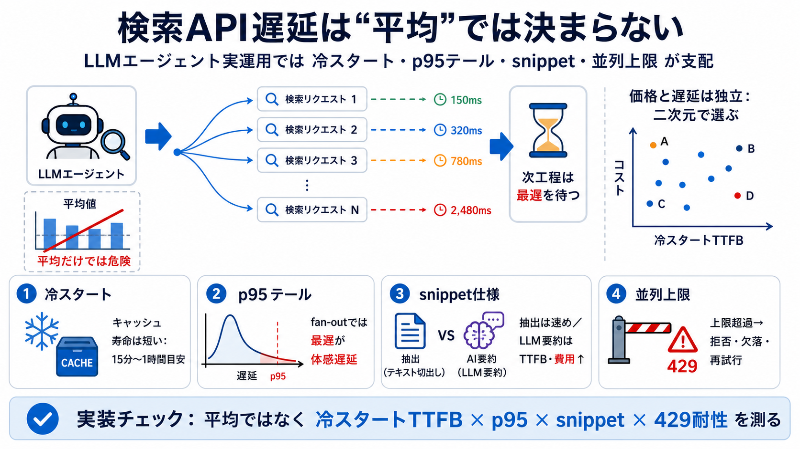

Fastest Web Search API for AI Agents: 2026 Latency ...
We benchmarked eight web search APIs in August 2026. Serper wins raw latency at sub-100ms, the fastest API that returns …

検索APIをLLMエージェントが使うとき、待ち時間はキャッシュ寿命・テール遅延・snippet仕様・並列上限で決まり、“速いAPIランキング”とはズレます。
ベンチマークの“速さ”は単発・ウォーム前提になりがちですが、エージェントは反復と並列（fan-out）で最遅の結果を待ちます。そのためp95や分散が体感を支配します。
調査が示す中核は(1)キャッシュが短命で冷スタートが多い、(2)p50よりp95が効く、(3)snippetがLLM生成なら遅延・費用が跳ねる、の3点です。
観測できた範囲では、キャッシュは概ね1時間以内で、さらに多くは15分以内に期限切れでした。エージェントは同一クエリを繰り返しにくく、ウォーム時の速さが本番で続きません。
fan-outでは複数の検索結果を並列に投げ、次工程は最遅の応答を待ちます。p50が速くてもp95が大きいプロバイダは体感が悪化し得ます。
snippetが単なる抜粋（extractive）ではなくLLM要約（LLM-written）を含む場合、TTFBも単価も増えます。調査ではLLM要約ルートが“遅延およそ5倍、価格およそ2.4倍”に相当すると示されています。
提供側ベンチマークは“そのクエリ文字列が直近で見られていたか”で数十倍変わることがあり、同一APIでも105ms級と約4,000ms級があり得ます。開示がない比較は解釈不能になり得ます。
エージェントは並列検索しますが、プロバイダに“同時リクエスト上限”があります。exaとlinkupは同時10前後で拒否が起き、fan-out（例：16-way）では多くのサブクエリが落ち得ます。
同一契約（同一アウトプット形）で冷スタートTTFBと1,000回あたりコストを比較すると、安いのに速い/高いのに遅いなどが起き得ます。したがって“高い＝速い”の一般化は危険です。
よくある疑問は“用語の置き換え”で整理できます。冷スタート/p95/snippet/ベンチ条件/並列拒否の5点を押さえるのが最短です。
強みは“エージェントが支払う遅延（冷スタートTTFB・p95・fan-out・429）”に寄せている点です。弱みは“9社・特定契約・単一地点”であり、品質（関連性）まで統一評価していない可能性です。
検索API選定は平均ではなく、冷スタート・p95テール・snippet仕様・並列上限を同時に見てください。そうすれば“キャッシュ前提の楽観”と“テールに踏まれる”失敗を減らせます。
We benchmarked eight web search APIs in August 2026. Serper wins raw latency at sub-100ms, the fastest API that returns …
| Exa Search (fast) logoExa Search (fast) | 68 | 35 | 76 | 61 | 69 | $78.11 | $80.53 | 22.6s | | You.com Search (snippet…